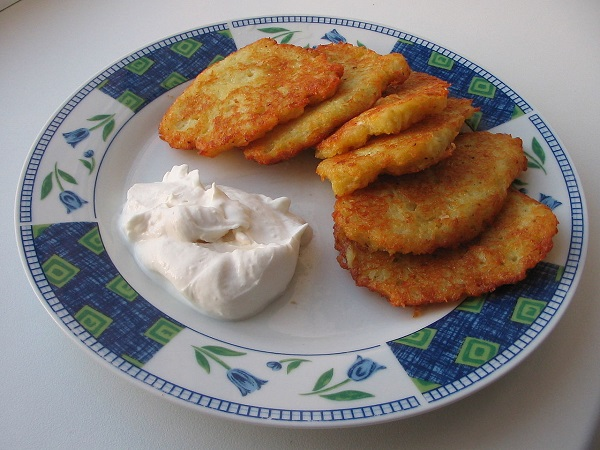
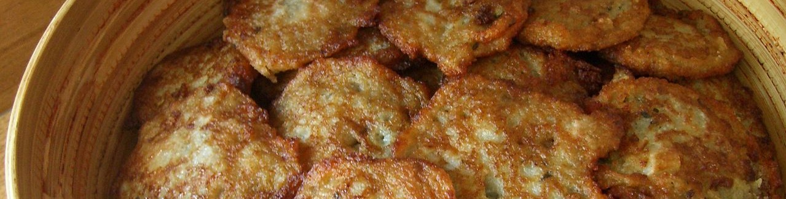

Попробуйте наши драники!
Пожалуй, каждый, кто хоть немного знаком с белорусской кухней, согласится, что ее просто невозможно представить без блюд из картофеля! Его здесь жарят, тушат, запекают, варят, бланшируют – а иногда и все вместе. И, конечно, одним из наиболее известных блюд, своеобразным кулинарным символом Беларуси являются драники.
Лишь в 1830 году знаменитым польским кулинаром Яном Шытлером в книге "Кухар добра навучаны" был впервые опубликован рецепт драников. В этом кулинарном издании автор описал оладьи из картофеля, рецепт которых он позаимствовал из немецкой кухни. Книга эта стала очень популярна, ее огромное количество раз переиздавали, а рецепт полюбился многим европейским народам. Но именно белорусские драники считаются наиболее удачным воплощением этого блюда, ведь богатый крахмалом картофель, выращиваемый на этих землях, подходит для него как нельзя лучше.
Название "драники" (белор. дранiкi) берет свое начало из старорусского языка и происходит оно от слова "драть", то есть тереть. Ведь их готовят из сырого картофеля, который еще до появления тёрки "драли" на заостренной доске. Традиционно драники ели на завтрак, а в деревнях существовала интересная традиция: перед тем, как отведать это блюдо, полагалось всухомятку съесть корочку черного хлеба. Приготовить "правильные" белорусские драники совсем несложно, важно только помнить, что картофель должен быть особенным – выращенным на благодатной земле Беларуси.
Но, как и любое другое популярное блюдо, драники славятся огромным разнообразием рецептов. От дома к дому, от хозяйки к хозяйке изменяются не только входящие в состав блюда ингредиенты, но и сам способ приготовления. Так, одни предпочитают натирать картофель на мелкой дерущей терке, другие же считают, что терка должна быть непременно крупная. Кто-то добавляет лук или кефир, чтобы тертый картофель не потемнел, некоторые после обжаривания томят драники в печи или духовке. Даже сама картофельная масса может быть приготовлена тремя разными способами. Ну и, конечно же, дополнительные ингредиенты не ограничиваются только луком и кефиром. В современных рецептах в драники добавляют соду, дрожжи, муку, творог, яйца, мясной или рыбный фарш, бекон, куриную грудку или печень, сардельки, майонез, грибы, тыкву, чеснок, сыр, вареную морковь, пастернак, сельдерей и даже мак.
Предлагаем Вам попробовать наши драники. В нашем меню есть три варианта этого блюда: с курицей и грабами, с языком и сладким перцем, с беконом и сметанным соусом. Выбирайте то, что по вкусу именно Вам!
